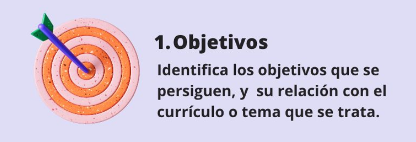
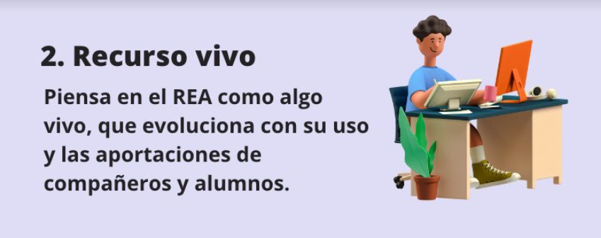
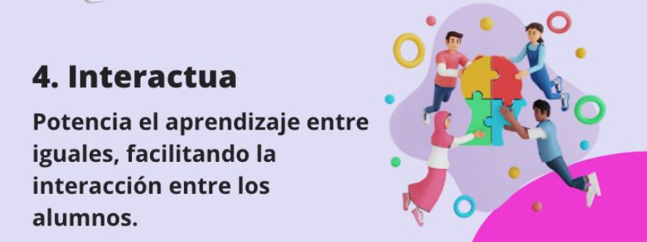
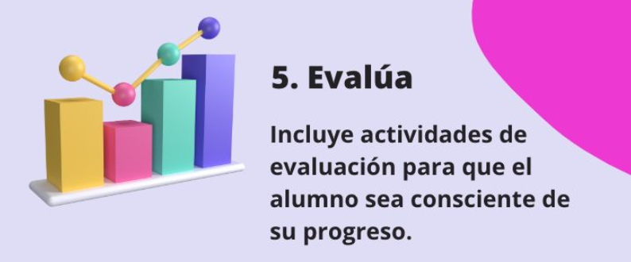
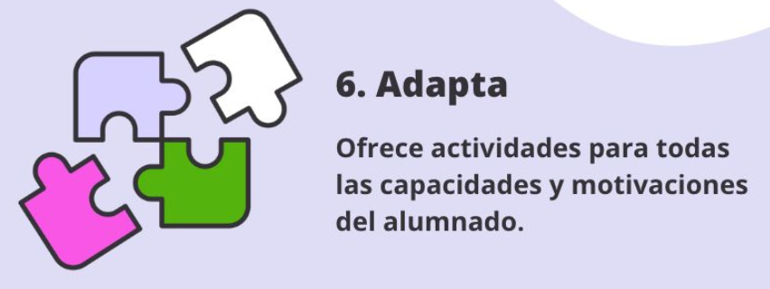
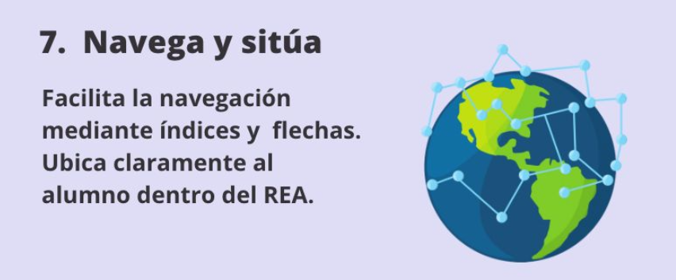
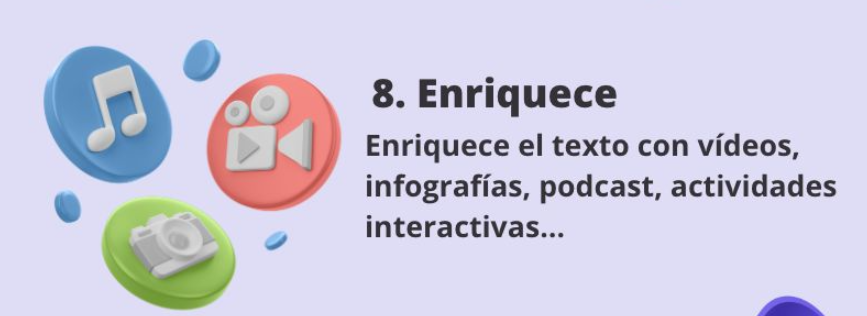
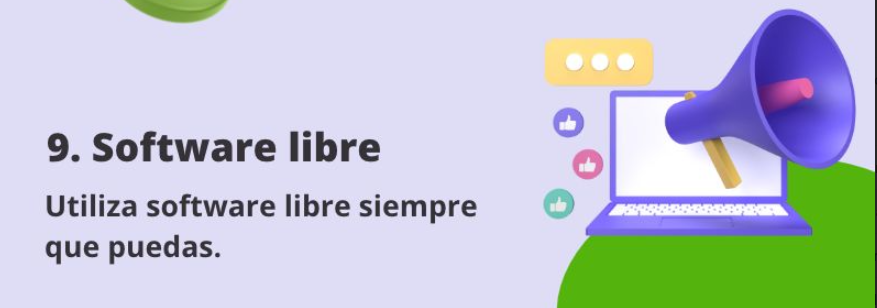
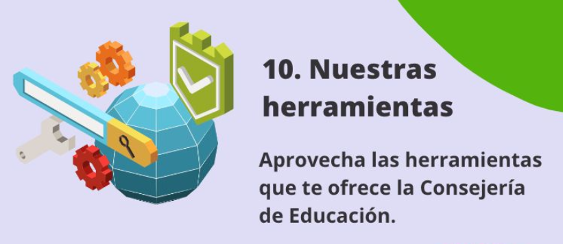

8. Recomendaciones REA
1. Objetivos.
Antes de comenzar la creación de un REA, se recomienda identificar los objetivos que se persiguen, así como su relación con el currículo o tema que se trata.

2. Recurso vivo.
El docente debe identificar el REA como algo vivo, que evoluciona con su uso y las aportaciones de compañeros y alumnos.

3. Estructura.
El REA ha de tener una estructura lógica y previsible. Utilizando lenguaje claro y conciso. Avanzando en los contenidos de forma secuencial y con dificultad creciente. Incluyendo ejemplos, ejercicios y actividades prácticas que faciliten la adquisición de los contenidos.
4. Interactúa.
Se debe propiciar el aprendizaje entre iguales, facilitando la interacción entre los alumnos. Por ejemplo, con foros de dudas en los que el docente sólo intervenga para reforzar o aclarar explicaciones erróneas.

5. Evalúa.
Facilitar que el alumno sea consciente de su progreso, para lo que se deben incluir actividades de evaluación y sus correspondientes rúbricas.

6. Adapta.
El REA debe adaptarse a las distintas capacidades e inquietudes del alumno. Ofreciendo opciones de actividades tanto de refuerzo, como de ampliación.

7. Navega y sitúa.
Facilitar la navegación, por ejemplo, con el índice siempre visible (con opción de ocultación), con flechas de navegación muy evidentes, resaltando en el índice el apartado en el que estoy,...

8. Enriquece.
Intentar aprovechar las posibilidades digitales para enriquecer el texto con vídeos, infografías, podcast, actividades interactivas,…

9. Software libre.
Se recomienda, en la medida de lo posible, la utilización de software libre por la facilidad de uso que aportan sus licencias. Además de contribuir a inculcar en los alumnos la filosofía de que el conocimiento ha de ser libre. Algo que constituye la piedra angular del código abierto, como contraposición al software propietario.

10. Nuestras herramientas.
Para garantizar la privacidad y la accesibilidad por parte de toda la comunidad educativa de la Región de Murcia, se deben utilizar las herramientas digitales que ofrece la Consejería de Educación.

Obra publicada con Licencia Creative Commons Reconocimiento Compartir igual 4.0